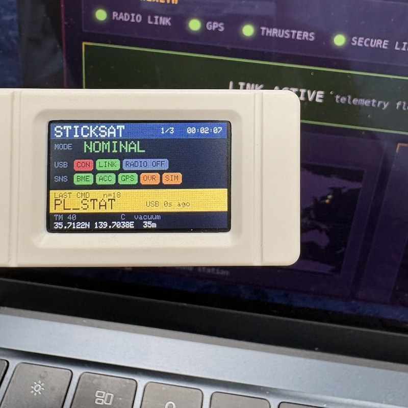

このボードには、わざと弱点を残した衛星の模擬機が入っています。
USB でつなぐだけで動き、電波は出しません。
無料の自習コースで、AI を家庭教師にして学べます。

| テーマ | ねらい | |
|---|---|---|
| 1 | 命令の洗い出し | 使える命令を自分で調べる |
| 2 | リプレイ | 暗号化しても、使い回しは防げない |
| 3 | 認証のないコマンド | 誰が送ったかを確認しない |
| 4 | 取り消せないコマンド | 気付けても止められない |
| 5 | フラッシュの読み出し | 配られた値は鍵にならない |
| 6 | 位置のなりすまし | 位置情報が権限になる危うさ |
| 7 | 地上局のなりすまし | 弱い認証と、攻撃の連鎖 |
| 8 | 除外された命令の悪用 | 例外の命令が入口になる |
| 9 | 暗号のダウングレード | 1 バイトで暗号が切れる |
| 10 | 長さ計算のアンダーフロー | 短い入力でボードが落ちる |